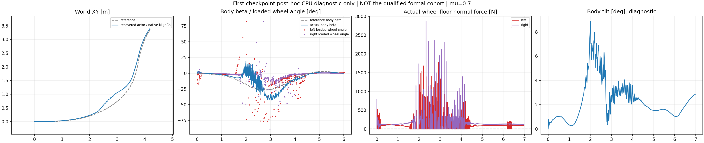

This uses the first attempt's independently verified CPU export after its formal export gate failed. Its final training-period native health is unavailable. It is not admitted to the qualified formal comparison, and does not replace the corrected repetition or its three queued nominal episodes.
One native CPU MuJoCo episode at μ=0.7,400 Hz physics /50 Hz policy,6.98 s,349 decisions and2,793 consecutive native states. The normalized actor is loaded once. Original500/10 leg PD,80 Nm leg /12 Nm wheel limits, locked reference and deterministic initial state remain. No training or GPU job was added, no hidden reset occurred, and only the initial root state was written. This is an engine-and-force-law transfer from nonlinear PhysX training to native MuJoCo friction.
| Core XY RMSE | Core speed retained | Core β RMSE | Any-wheel support | Longest bearing gap | HF / original same-engine PPO | Core max tilt |
|---|---|---|---|---|---|---|
| 0.1764 m | 92.83% | 12.71° | 85.99% | 90 ms | 1.004 | 8.87° |
Core1.44–4 s; support0.02–6.96 s. The original diagnostic gates fail for core XY RMSE, speed retention, intended β error, support continuity/gap and angular-HF reduction. The body stays near upright and recorded nonwheel-ground force is zero. These are continued tracking/contact difficulties, not a fallen-body improvement in support. A below5 N bearing sample does not by itself prove geometric flight.

Near-zero-speed body angles are masked. During the turn core, left/right loaded wheel link-origin course-to-rolling-plane mean absolute angles are14.85° /7.19°; actual active-point force-weighted lateral-slip RMS is0.452 /0.194 m/s. Body β and per-wheel heading/slip remain distinct. Neither nonzero side angle nor sliding is classified as a mismatch by itself.
91 transitions into below5 N any-wheel support occur in the contact window;34 are at the first native sample after a50 Hz action update. Other interruptions occur within the held-action window. This timing does not establish a cause. The retained full-frequency, ground-normal and heading data support more specific diagnostics once the qualified comparison completes.
Complete measured metrics and ground-conditioned angles · Actual native episode proof · Evidence hashes · Separate corrected formal repetition. No neural weights, physical model assets, credentials or native libraries are redistributed. FK reconstructs velocities/headings only; no dynamics, smoothing or pose correction is run by the analyzer.